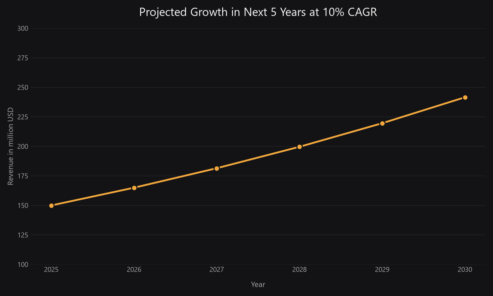
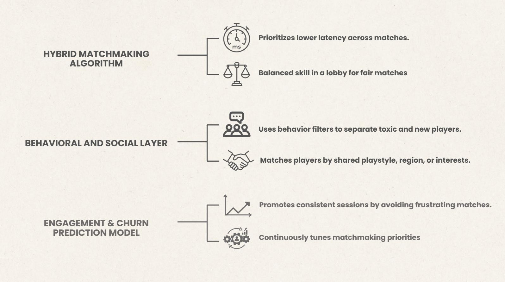

How I think before I build.
Ongoing MFA thesis work, plus three pieces of coursework that sit behind the work on the rest of this site. Full papers and decks are linked on each page — this is the visual version.

00 / MFA Thesis — Ongoing, Sprint 1 of 3
From Capture to Cut
A relightable 3D Gaussian Splatting pipeline for virtual production on LED volume stages — with a real practitioner interview behind the rubric.

01 / Contemporary Art — ARTH 701
The Art of Scale
How Denis Villeneuve uses visual scale as a storytelling device — and what happens when I turn the same lens on my own environment work.

02 / Interaction Design — IXDS-710
Designing a meta-narrative 2D RPG
A full design-research cycle — persona, market sizing, competitor audits, user interviews, and wireframes. Team project.

03 / Systems Research
Multidimensional Matchmaking Algorithm
A literature review of Call of Duty's skill-based matchmaking, and a proposed algorithm to close the gap between players and developers.